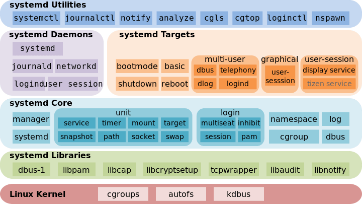

systemd 使用入门
Systemd 是 Linux 系统工具，用来启动守护进程，已成为大多数发行版的标准配置。它的设计目标是，为系统的启动和管理提供一套完整的解决方案。
根据 Linux 惯例，字母d是守护进程（daemon）的缩写。 Systemd 这个名字的含义，就是它要守护整个系统。
Systemd 架构

systemctl是 Systemd 的主命令，用于管理系统。
# 重启系统
$ sudo systemctl reboot
# 关闭系统，切断电源
$ sudo systemctl poweroff
# CPU停止工作
$ sudo systemctl halt
# 暂停系统
$ sudo systemctl suspend
# 让系统进入冬眠状态
$ sudo systemctl hibernate
# 让系统进入交互式休眠状态
$ sudo systemctl hybrid-sleep
# 启动进入救援状态（单用户状态）
$ sudo systemctl rescuehostnamectl命令用于查看当前主机的信息。
# 显示当前主机的信息
$ hostnamectl
# 设置主机名。
$ sudo hostnamectl set-hostname rhel7timedatectl命令用于查看当前时区设置。
# 查看当前时区设置
$ timedatectl
# 显示所有可用的时区
$ timedatectl list-timezones
# 设置当前时区
$ sudo timedatectl set-timezone America/New_York
$ sudo timedatectl set-time YYYY-MM-DD
$ sudo timedatectl set-time HH:MM:SSUnit
Systemd 可以管理所有系统资源。不同的资源统称为 Unit（单位）。
Unit 一共分成12种:
Service unit：系统服务
Target unit：多个 Unit 构成的一个组
Device Unit：硬件设备
Mount Unit：文件系统的挂载点
Automount Unit：自动挂载点
Path Unit：文件或路径
Scope Unit：不是由 Systemd 启动的外部进程
Slice Unit：进程组
Snapshot Unit：Systemd 快照，可以切回某个快照
Socket Unit：进程间通信的 socket
Swap Unit：swap 文件
Timer Unit：定时器systemctl status命令用于查看系统状态和单个 Unit 的状态。
# 显示系统状态
$ systemctl status
# 显示单个 Unit 的状态
$ sysystemctl status bluetooth.serviceUnit 管理
对于用户来说，最常用的是下面这些命令，用于启动和停止 Unit（主要是 service）
# 立即启动一个服务
$ sudo systemctl start apache.service
# 立即停止一个服务
$ sudo systemctl stop apache.service
# 重启一个服务
$ sudo systemctl restart apache.service
# 杀死一个服务的所有子进程
$ sudo systemctl kill apache.service
# 查看一个服务的状态
$ sudo systemctl status apache.service
# 重新加载一个服务的配置文件
$ sudo systemctl reload apache.service
# 重载所有修改过的配置文件
$ sudo systemctl daemon-reload依赖关系
Unit 之间存在依赖关系：A 依赖于 B，就意味着 Systemd 在启动 A 的时候，同时会去启动 B。
systemctl list-dependencies命令列出一个 Unit 的所有依赖。
$ systemctl list-dependencies nginx.service
Unit 的配置文件
每一个 Unit 都有一个配置文件，告诉 Systemd 怎么启动这个 Unit 。
Systemd 默认从目录 /etc/systemd/system/ 读取配置文件。但是，里面存放的大部分文件都是符号链接，指向目录 /usr/lib/systemd/system/，真正的配置文件存放在那个目录。
如果配置文件里面设置了开机启动，systemctl enable 命令相当于激活开机启动。
与之对应的，systemctl disable 命令用于在两个目录之间，撤销符号链接关系，相当于撤销开机启动。
配置文件的后缀名，就是该 Unit 的种类，比如 sshd.socket。如果省略，Systemd 默认后缀名为 .service，所以 sshd 会被理解成 sshd.service。
从配置文件的状态无法看出，该 Unit 是否正在运行。这必须执行前面提到的 systemctl status 命令。
systemctl status bluetooth.service
一旦修改配置文件，就要让 SystemD 重新加载配置文件，然后重新启动，否则修改不会生效。
sudo systemctl daemon-reload
sudo systemctl restart httpd.service
配置文件的格式
配置文件就是普通的文本文件，可以用文本编辑器打开。systemctl cat 命令可以查看配置文件的内容:
root@niekun-bandwagon:~# systemctl cat nginx
# /lib/systemd/system/nginx.service
[Unit]
Description=The NGINX HTTP and reverse proxy server
After=syslog.target network-online.target remote-fs.target nss-lookup.target
Wants=network-online.target
[Service]
Type=forking
PIDFile=/opt/nginx/logs/nginx.pid
ExecStartPre=/usr/local/bin/nginx -t
ExecStart=/usr/local/bin/nginx
ExecReload=/usr/local/bin/nginx -s reload
ExecStop=/bin/kill -s QUIT $MAINPID
PrivateTmp=true
[Install]
WantedBy=multi-user.target配置文件的区块
[Unit]区块通常是配置文件的第一个区块，用来定义 Unit 的元数据，以及配置与其他 Unit 的关系。它的主要字段如下。
Description：简短描述
Documentation：文档地址
Requires：当前 Unit 依赖的其他 Unit，如果它们没有运行，当前 Unit 会启动失败
Wants：与当前 Unit 配合的其他 Unit，如果它们没有运行，当前 Unit 不会启动失败
BindsTo：与Requires类似，它指定的 Unit 如果退出，会导致当前 Unit 停止运行
Before：如果该字段指定的 Unit 也要启动，那么必须在当前 Unit 之后启动
After：如果该字段指定的 Unit 也要启动，那么必须在当前 Unit 之前启动
Conflicts：这里指定的 Unit 不能与当前 Unit 同时运行
Condition...：当前 Unit 运行必须满足的条件，否则不会运行
Assert...：当前 Unit 运行必须满足的条件，否则会报启动失败[Install]通常是配置文件的最后一个区块，用来定义如何启动，以及是否开机启动。它的主要字段如下。
WantedBy：它的值是一个或多个 Target，当前 Unit 激活时（enable）符号链接会放入/etc/systemd/system目录下面以 Target 名 + .wants后缀构成的子目录中
RequiredBy：它的值是一个或多个 Target，当前 Unit 激活时，符号链接会放入/etc/systemd/system目录下面以 Target 名 + .required后缀构成的子目录中
Alias：当前 Unit 可用于启动的别名
Also：当前 Unit 激活（enable）时，会被同时激活的其他 Unit[Service]区块用来 Service 的配置，只有 Service 类型的 Unit 才有这个区块。它的主要字段如下。
Type：定义启动时的进程行为。它有以下几种值。
Type=simple：默认值，执行ExecStart指定的命令，启动主进程
Type=forking：以 fork 方式从父进程创建子进程，创建后父进程会立即退出
Type=oneshot：一次性进程，Systemd 会等当前服务退出，再继续往下执行
Type=dbus：当前服务通过D-Bus启动
Type=notify：当前服务启动完毕，会通知Systemd，再继续往下执行
Type=idle：若有其他任务执行完毕，当前服务才会运行
ExecStart：启动当前服务的命令
ExecStartPre：启动当前服务之前执行的命令
ExecStartPost：启动当前服务之后执行的命令
ExecReload：重启当前服务时执行的命令
ExecStop：停止当前服务时执行的命令
ExecStopPost：停止当其服务之后执行的命令
RestartSec：自动重启当前服务间隔的秒数
Restart：定义何种情况 Systemd 会自动重启当前服务，可能的值包括always（总是重启）、on-success、on-failure、on-abnormal、on-abort、on-watchdog
TimeoutSec：定义 Systemd 停止当前服务之前等待的秒数
Environment：指定环境变量日志管理
ystemd 统一管理所有 Unit 的启动日志。带来的好处就是，可以只用 journalctl 一个命令，查看所有日志（内核日志和应用日志）。journalctl 功能强大，用法非常多。
# 查看所有日志（默认情况下 ，只保存本次启动的日志）
$ sudo journalctl
# 查看内核日志（不显示应用日志）
$ sudo journalctl -k
# 显示尾部的最新10行日志
$ sudo journalctl -n
# 查看指定服务的日志
$ sudo journalctl /usr/bin/python
# 查看某个 Unit 的日志
$ sudo journalctl -u nginx.service应用
开机启动
对于那些支持 Systemd 的软件，安装的时候，会自动在 /usr/lib/systemd/system 目录添加一个配置文件。
如果你想让该软件开机启动，就执行下面的命令（以 httpd.service 例）。
sudo systemctl enable httpd
上面的命令相当于在 /etc/systemd/system 目录添加一个符号链接，指向 /usr/lib/systemd/system 里面的httpd.service文件。
这是因为开机时，Systemd只执行 /etc/systemd/system 目录里面的配置文件。这也意味着，如果把修改后的配置文件放在该目录，就可以达到覆盖原始配置的效果。
启动服务
设置开机启动以后，软件并不会立即启动，必须等到下一次开机。如果想现在就运行该软件，那么要执行 systemctl start 命令。
sudo systemctl start httpd
执行上面的命令以后，有可能启动失败，因此要用 systemctl status 命令查看一下该服务的状态。
停止服务
终止正在运行的服务，需要执行 systemctl stop 命令:
sudo systemctl stop httpd.service
有时候，该命令可能没有响应，服务停不下来。这时候就不得不"杀进程"了，向正在运行的进程发出 kill 信号:
sudo systemctl kill httpd.service
此外，重启服务要执行 systemctl restart 命令：
sudo systemctl restart httpd.service
参考链接
http://www.ruanyifeng.com/blog/2016/03/systemd-tutorial-commands.html
http://www.ruanyifeng.com/blog/2016/03/systemd-tutorial-part-two.html
标签：无